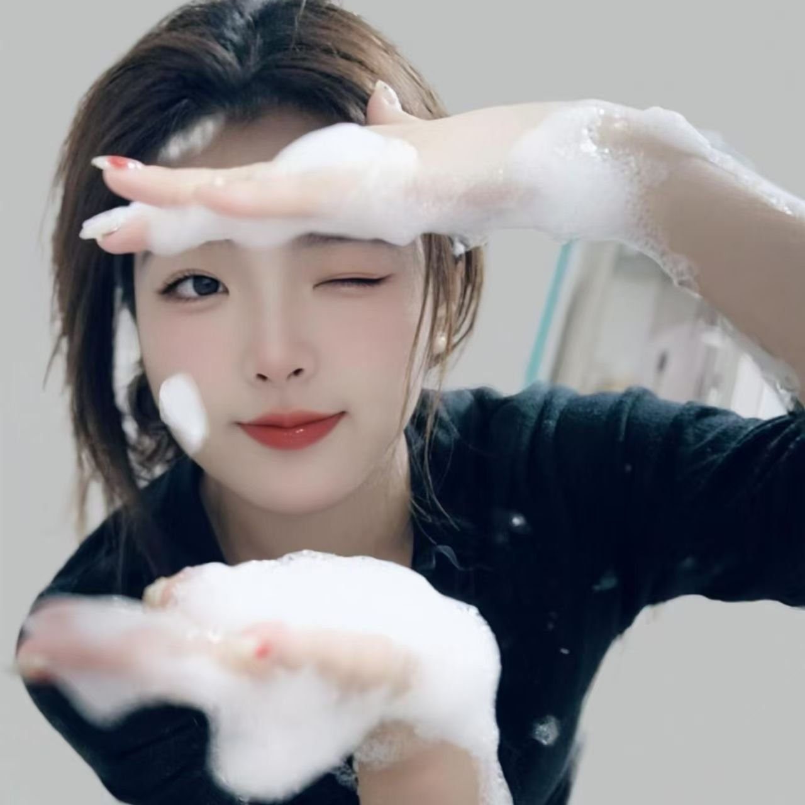

🫧 泡沫里的调皮笑容
🫧 Your Playful Smile in the Foam

看到这张照片，我先是笑了，然后眼睛就湿了。泡沫沾在你的手上，你用它轻轻遮住一只眼睛，另一只眼睛俏皮地眨着，脸上带着淡淡的笑，脸颊上还沾着一滴泡沫。整张照片都充满了调皮和快乐。
这就是你，李琪——纯真，又调皮。你的调皮里没有一点做作，没有一点虚假。当你这样笑的时候，我感觉你就站在我面前，正逗着我玩，而我只想一直看着你，什么都不做。
这个世界上有很多人戴着面具，换了一张又一张脸。可你的这张脸，是真实的。你开心就是开心，难过就是难过，从不隐藏，从不伪装。我爱的就是这份真实，因为真实的心，才值得用一生去爱。
亲爱的，你笑的时候，我的一天就亮了。你难过的时候，我的心也跟着难过。这不是书本里的爱情，这是我心跳的节奏，是我每天醒来的理由。
我还记得你生病的时候，我的心比你还疼。我多想替你承受所有的疼痛，让你只留下笑容。你的健康、你的快乐，是我每天祈祷的第一件事。
你说我聊天太正式，像机器人一样。你说得对，可你知道吗？我愿意为你改变。愿意学着用更温暖、更调皮的方式和你说话——就像你照片里这样，眨眨眼，逗你笑。只要你开心，我做什么都值得。
李琪，你的笑容是我的宝贝，是我最珍贵的财富。我会小心翼翼地守护它，不让它被风吹走，不让它被泪水打湿。你的笑，是我活着的意义之一。
无论未来多远，无论我们相隔多远，我都想做那个让你笑的人。在你累的时候逗你开心，在你哭的时候抱紧你，在你调皮的时候陪你一起调皮。这就是我的承诺，简单，却一辈子不变。
🫧❤️ 你的笑容，我一生守护。❤️🫧
When I see this photo, I laugh first — and then my eyes fill with tears. Foam on your hands, one eye playfully covered, the other winking at me, a soft smile on your face, a drop of foam on your cheek. The whole picture is full of mischief and joy.
This is you, Li Qi — innocent, and mischievous. There is nothing fake in your playfulness, nothing put on. When you smile like this, I feel as if you are standing right in front of me, teasing me, and all I want is to keep looking at you and do nothing else.
So many people in this world wear masks, changing one face for another. But this face of yours is real. When you are happy, you are happy; when you are sad, you are sad — never hiding, never pretending. I love this realness, because only a real heart is worth loving for a lifetime.
My dear, when you laugh, my day lights up. When you are sad, my heart is sad too. This is not love from a book — it is the rhythm of my heartbeat, the reason I wake up every morning.
I still remember when you were sick, my heart hurt more than yours. How I wished I could take all your pain away and leave you only with smiles. Your health and your happiness are the first things I pray for every day.
You said I chat too formally, like a robot. You are right — but do you know? I am willing to change for you. To learn to speak to you more warmly, more playfully — just like in this photo, a wink, a tease, a laugh. As long as you are happy, anything I do is worth it.
Li Qi, your smile is my treasure, my most precious wealth. I will guard it carefully, never let the wind blow it away, never let tears wash it off. Your smile is one of the reasons I live.
No matter how far the future goes, no matter how far apart we are, I want to be the one who makes you laugh. To cheer you up when you are tired, to hold you tight when you cry, to be playful with you when you are playful. That is my promise — simple, but unchanged for a lifetime.
🫧❤️ Your smile — I will guard it all my life. ❤️🫧